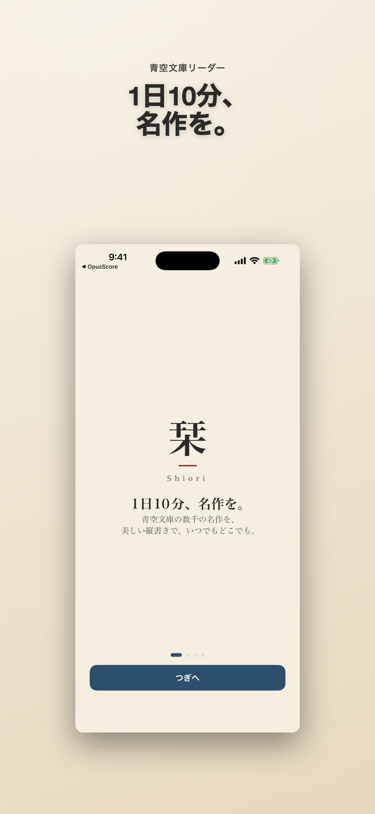
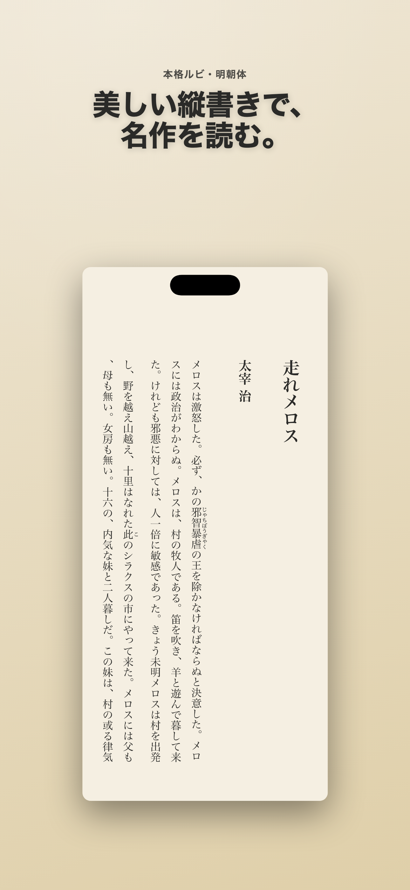
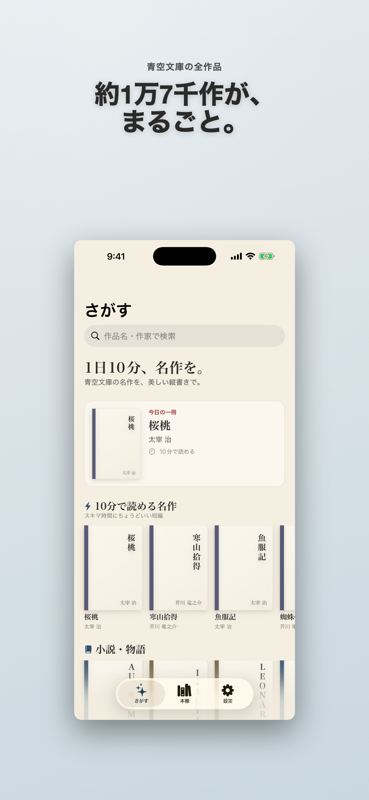

1日10分、名作を。
栞は、青空文庫の著作権が切れた名作を、美しい縦書きと本格ルビで読める読書アプリです。テーマ別コレクション、読了時間での発見、自分だけの本棚で、日本文学を手のひらに。
App Storeリンクは公開後に追加します。



できること
美しい縦書き紙の文庫本のような組版とルビで、長く読んでも疲れにくい読み心地。
次の一冊に出会うテーマ別コレクションや読了時間から、今読める名作を探せます。
読書を続けるお気に入り、フォルダ、読書統計で自分だけの本棚を育てます。